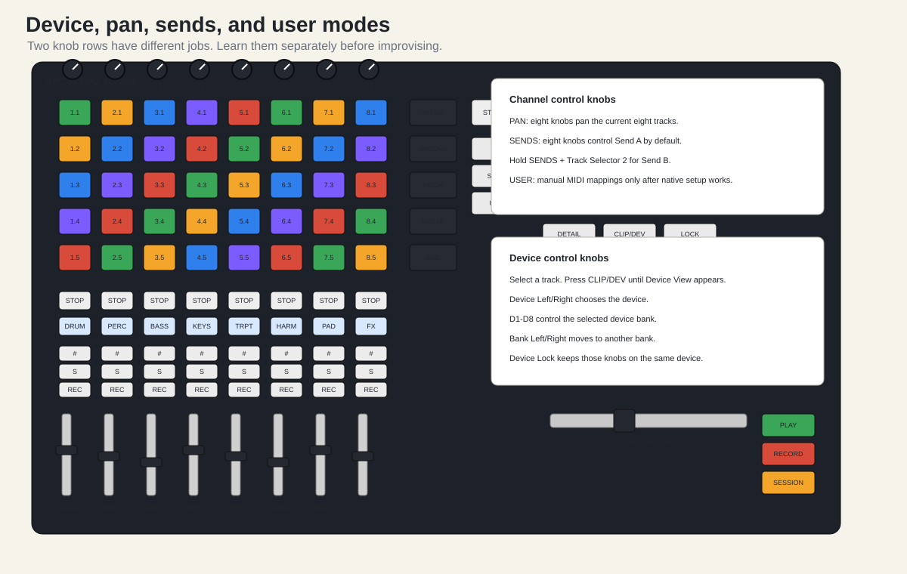

The row of eight assignable knobs can do different things depending on mode.
Press Pan. Now the eight assignable knobs control
panning for the current eight tracks.
Beginner pan map:
| Track | Pan |
|---|---|
| Drums | center |
| Percussion | slightly right |
| Bass | center |
| Keys | slightly left |
| Trumpet | center or slightly right |
| Harmony | left/right spread |
| Pads | wide but not extreme |
| FX | whatever makes the transition audible |
Do not over-pan bass or kick. Keep low-frequency foundation centered.
Press Sends. By default, the knobs control Send A for
the current eight tracks. If Send A is reverb, each knob controls how
much reverb each track receives.
To select another send, the Akai manual describes this gesture:
Sends.Sends.Beginner return-track plan:
| Return | Effect | Use |
|---|---|---|
| Return A | Reverb | pads, trumpet, harmony, ending tail |
| Return B | Delay | trumpet stab, vocal chop, FX throw |
User mode is for manual MIDI mapping. Do not use it during the first setup. Use it only after:
Beginner User mode mapping:
User.Manual mappings live in the Live Set. They do not automatically become a global APC behavior for every project.
